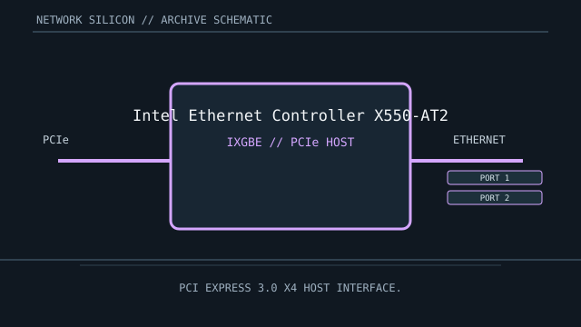

[ MODEL-SPECIFIC NETWORK HARDWARE ]
Intel Ethernet Controller X550-AT2
Dual-port 10GBASE-T Ethernet controller silicon with multi-gigabit copper rates. This is a controller/chip record; finished-card details are implementation-specific.

IDENTIFICATION: Match complete component top-mark, stepping and board revision. Nominal signaling rates are not measurements of application throughput.
Exact specifications and compatibility
| Dedicated subcategory | Ethernet controllers and PHYs |
|---|---|
| Exact controller identity | Intel Ethernet Controller X550-AT2 |
| Component / board identity | Dual-port controller IC; a finished NIC adds board-level 10GBASE-T analog and connector circuitry. |
| PCIe bus and host interface | PCI Express 3.0 x4 host interface. |
| Ethernet ports / physical interface | Two 10GBASE-T ports; supports 10/5/2.5/1 Gb/s and 100 Mb/s copper link modes when the board and link partner expose them. |
| Nominal rate (not measured) | Up to 10 Gb/s nominal per port (20 Gb/s aggregate line rate); not measured throughput. |
| Drivers and OS compatibility | Linux ixgbe driver and Intel/OEM Windows Ethernet packages for supported adapter SKUs. Firmware/NVM, PCI subsystem identity and adapter vendor support determine exact OS coverage. |
| Board / system compatibility | Requires an X550-AT2 board with PCIe 3.0 x4 connectivity, suitable thermal design, copper PHY circuitry, magnetics and two RJ-45 ports. Link rate also depends on cabling and partner capability. |
| Revision and variant warning | X550-AT2 is the dual-port controller silicon identity. A board labeled X550-T2 is an adapter implementation; verify the full board SKU, firmware and bracket before assuming equivalence. |
| Measured throughput | No measured benchmark is claimed for a physical specimen. A valid result records the host, link partner, medium, driver/firmware, traffic pattern, test tool and duration. |
Identification and revision notes
X550-AT2 is the dual-port controller silicon identity. A board labeled X550-T2 is an adapter implementation; verify the full board SKU, firmware and bracket before assuming equivalence.
Linux ixgbe driver and Intel/OEM Windows Ethernet packages for supported adapter SKUs. Firmware/NVM, PCI subsystem identity and adapter vendor support determine exact OS coverage.
Requires an X550-AT2 board with PCIe 3.0 x4 connectivity, suitable thermal design, copper PHY circuitry, magnetics and two RJ-45 ports. Link rate also depends on cabling and partner capability.
Archival and preservation notes
Record chip marking, board part number, firmware/NVM version and port labels. 10GBASE-T thermals can be significant; retain the original heatsink and airflow conditions.
For an installed specimen, preserve source URL, access date, source revision and label/condition notes. Do not infer connector count or board-level compatibility from controller family name alone.
Manufacturer and driver sources
- Intel X550-AT2 specificationsIntel specifications for the exact dual-port X550-AT2 controller.
- Linux kernel ixgbe driver documentationLinux ixgbe driver documentation for supported Intel 10GbE controllers and adapter configuration.
Sources cover the named controller family and its relevant driver ecosystem. The exact board vendor’s compatibility list takes precedence for a finished adapter or motherboard implementation.